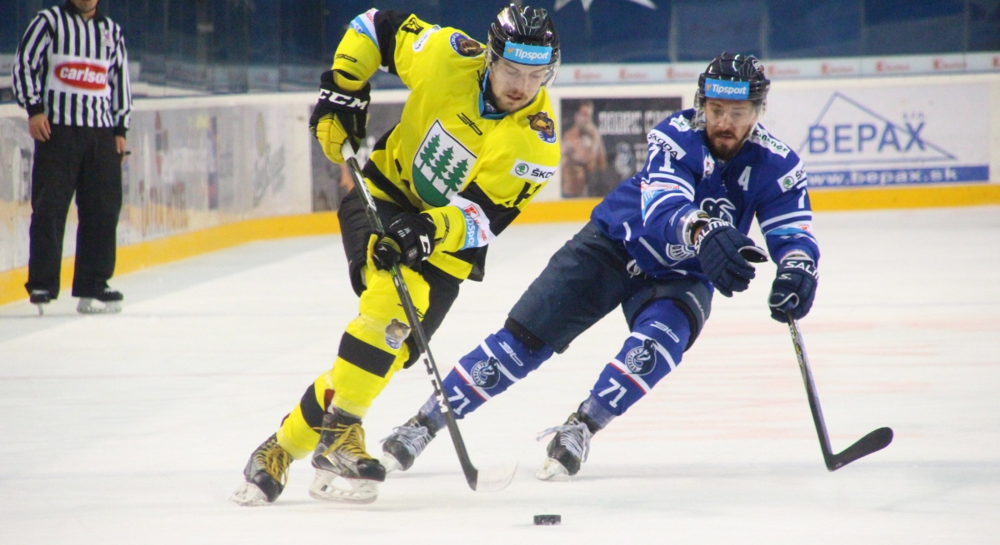
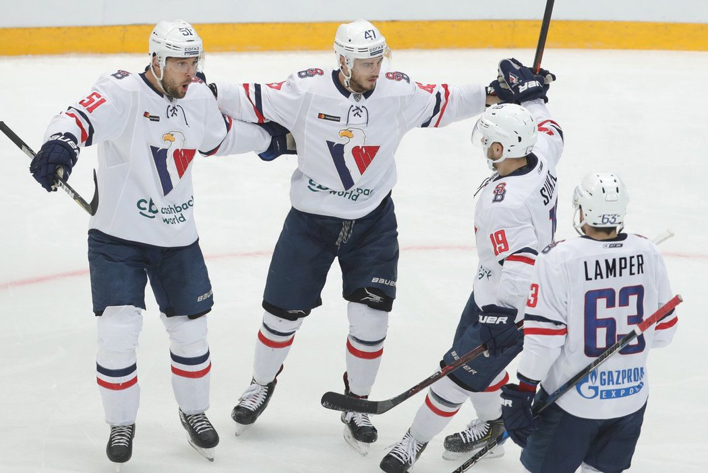
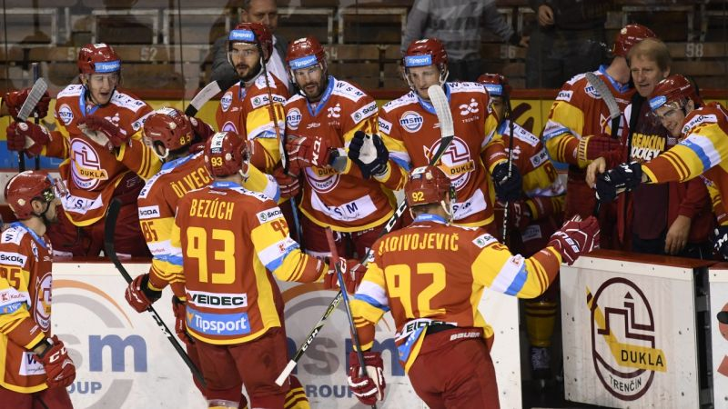
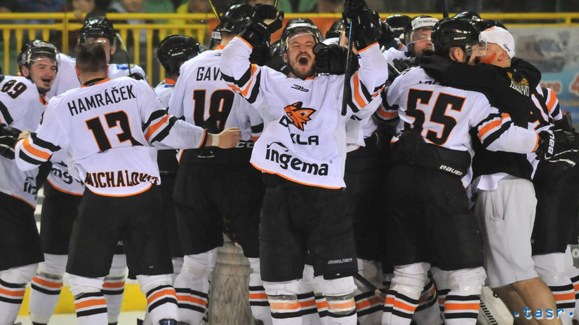
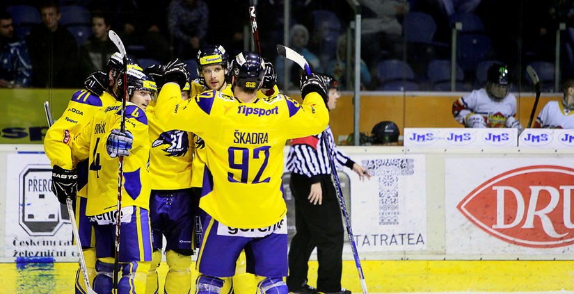

11. Kolo
11. Kolo
Tak predposledný víkend základnej časti nám ukončilo 11.kolo. Toto kolo bolo bohaté na počet vbstrelených gólov. Trenčín je nezastavitelný, dokonca spravil nový rekord. Spišská zaváhala a Poprad chytil späť streleckú formu. Košice tento víkend bez inkasovaného gólu.

 Detva nastúpila v
Detva nastúpila v  Poprade bez svojej brankárskej jednotky, ktorá patrí k hlavným pilierom kádru. Čo bolo cítiť priamo v zápase.
Poprade bez svojej brankárskej jednotky, ktorá patrí k hlavným pilierom kádru. Čo bolo cítiť priamo v zápase.  Poprad si na rýchlo zbúchanej náhrade doslova zgustol keď
Poprad si na rýchlo zbúchanej náhrade doslova zgustol keď  Detve nadelil sedem gólov behom 25 minút. V tom momente bolo pre
Detve nadelil sedem gólov behom 25 minút. V tom momente bolo pre  Detvu vymaľované. Po prvej trerine
Detvu vymaľované. Po prvej trerine  Poprad vyhrával už 6:0. V druhej tretine len doložil posledný kúsok a zápas dohrali vo voľnom tempe. Žiaľ
Poprad vyhrával už 6:0. V druhej tretine len doložil posledný kúsok a zápas dohrali vo voľnom tempe. Žiaľ  Detva sa pod Tatrami na nič nezmohla a stále ostáva na poslednom 7.mieste. Naopak
Detva sa pod Tatrami na nič nezmohla a stále ostáva na poslednom 7.mieste. Naopak  Poprad vyslal signál, že sa rozhodne nevzdáva boja o seminifálove priečky.
Poprad vyslal signál, že sa rozhodne nevzdáva boja o seminifálove priečky.

Tak a konečne sme sa dočkali. Slovan si po 5 zápasovej šnúre bez bodov konečne nejaké berie a to rovno tri. Stalo sa tak rovno proti
Slovan si po 5 zápasovej šnúre bez bodov konečne nejaké berie a to rovno tri. Stalo sa tak rovno proti  Skalici, ktorá ma za sebou rozhodne zlý víkend. Z dvoch zápasov nedokázala uchmatnúť ani jeden bod a tak sa jej semifinálové priečky vzdiaľujú.
Skalici, ktorá ma za sebou rozhodne zlý víkend. Z dvoch zápasov nedokázala uchmatnúť ani jeden bod a tak sa jej semifinálové priečky vzdiaľujú. Slovanu podľahla tesne 3:2. Nedokázalo pomôcť ani striedanie brankárov v polke zápasu. Nemyslíme si, že by bola chyba zrovna v brankárovi. Čo
Slovanu podľahla tesne 3:2. Nedokázalo pomôcť ani striedanie brankárov v polke zápasu. Nemyslíme si, že by bola chyba zrovna v brankárovi. Čo  Skalica potrebuje je jeden alebo dvaja poriadný strelci. Snáď sa ešte nejakých posíl pred play-off dočkáme keďže štvrťfinále už majú zaistené.
Skalica potrebuje je jeden alebo dvaja poriadný strelci. Snáď sa ešte nejakých posíl pred play-off dočkáme keďže štvrťfinále už majú zaistené.

Ďalší kto má zaistené play-off je rozhodne  Trenčín. Ten dokonca vôbec nešetril chlapcov z
Trenčín. Ten dokonca vôbec nešetril chlapcov z  Martina. Dukla im naložila rovno dvanásť kúskov. K tomu nie je čo dodať.
Martina. Dukla im naložila rovno dvanásť kúskov. K tomu nie je čo dodať.  Trenčín si tento víkend ide svoju vlastnú ligu. V posledných dvoch zápasoch skóroval 19 krát. Hviezdami zápasu sa rozhodne stala celá prvá formácia, ktorá nazbierala 22 kanadských bodov. Neuveriteľné. Treba však konečne spomenúť aj hrajúceho reprezentanta, ktorý popri svojích reprezentačných povinnostiach stíha naskakovať na ľad aj v tomto turnaji. Obránca Pontus Lindgren si pripísal rovno šesť asistencií za tento zápas a Švédska repre môže byť na svojho hráča hrdá tak ako aj manažér Dukly. Ale ani to nestačilo byť hviezdou celého kola. Tou sa stal Lari Suorsa (Trenčín), ktorý bodoval tiež šesť krát ale s bilanciou 4+2 a stáva sa tak najproduktívnejším hráčom kola. Gratulujeme
Trenčín si tento víkend ide svoju vlastnú ligu. V posledných dvoch zápasoch skóroval 19 krát. Hviezdami zápasu sa rozhodne stala celá prvá formácia, ktorá nazbierala 22 kanadských bodov. Neuveriteľné. Treba však konečne spomenúť aj hrajúceho reprezentanta, ktorý popri svojích reprezentačných povinnostiach stíha naskakovať na ľad aj v tomto turnaji. Obránca Pontus Lindgren si pripísal rovno šesť asistencií za tento zápas a Švédska repre môže byť na svojho hráča hrdá tak ako aj manažér Dukly. Ale ani to nestačilo byť hviezdou celého kola. Tou sa stal Lari Suorsa (Trenčín), ktorý bodoval tiež šesť krát ale s bilanciou 4+2 a stáva sa tak najproduktívnejším hráčom kola. Gratulujeme

 Zvolen si môže do denníčka zapísať veľmi úspešný víkend. Pozbieral všetky body, ktoré mohol získať a dostal sa na 4.miesto v tabuľke. Podarilo sa mu to po výhre na domácom ľade proti
Zvolen si môže do denníčka zapísať veľmi úspešný víkend. Pozbieral všetky body, ktoré mohol získať a dostal sa na 4.miesto v tabuľke. Podarilo sa mu to po výhre na domácom ľade proti  Gelnici, ktorej vypadol najlepší strelec. Na ľade sa to prejavilo tak, že
Gelnici, ktorej vypadol najlepší strelec. Na ľade sa to prejavilo tak, že  Gelnica nedokázala streliť ani jeden gól a domov tak odišla bez zisku nejakých bodov.
Gelnica nedokázala streliť ani jeden gól a domov tak odišla bez zisku nejakých bodov.

Hráči  Košíc môžu byť po tomto víkende vysmiatý od ucha k uchu. Svojím súperom totiž nedovolili skórovať ani raz a tak si brankár HC Jan Cihlář pripisuje dva čisté kontá. Po druhý krát sa tak stalo proti
Košíc môžu byť po tomto víkende vysmiatý od ucha k uchu. Svojím súperom totiž nedovolili skórovať ani raz a tak si brankár HC Jan Cihlář pripisuje dva čisté kontá. Po druhý krát sa tak stalo proti  Mikulášu v Steel aréne. Absencia brankáraskej jednotky v
Mikulášu v Steel aréne. Absencia brankáraskej jednotky v  Mikuláši aj v druhom zápase bola tiež veľmi citeľná. Odzrkadlilo sa to vo výsledku 4:0.
Mikuláši aj v druhom zápase bola tiež veľmi citeľná. Odzrkadlilo sa to vo výsledku 4:0.  Mikuláš tak nezvládol druhý zápas v rade a prichádza o cenné body pred play-off.
Mikuláš tak nezvládol druhý zápas v rade a prichádza o cenné body pred play-off.

Neopísateľné chvíle zažívajú práve v  Michalovciach či hráči tak aj fanúšikovia. Pýtate sa prečo? Dnes večer privítali na domácom ľade
Michalovciach či hráči tak aj fanúšikovia. Pýtate sa prečo? Dnes večer privítali na domácom ľade  Spišskú. Čo však nikto nečakal bolo, že líšky si zo
Spišskú. Čo však nikto nečakal bolo, že líšky si zo  Spišskej spravili fackovacieho panáka. Brankárska jednotka vyhorela a stratila koncentráciu v zápase, čo viedlo
Spišskej spravili fackovacieho panáka. Brankárska jednotka vyhorela a stratila koncentráciu v zápase, čo viedlo  Spišskú k viac menej potupnej prehre. No ale po toľkých výhrach si už pýtalo aby im niekto klepol po prstoch, no nie? A
Spišskú k viac menej potupnej prehre. No ale po toľkých výhrach si už pýtalo aby im niekto klepol po prstoch, no nie? A  Michalovce sa toho ujali veľmi vzorne. Dokonca si poistili 4.miesto v tabuľke a
Michalovce sa toho ujali veľmi vzorne. Dokonca si poistili 4.miesto v tabuľke a  Spišskej zavarili v boji o semifinálové priečky, o ktoré majú záujem hlavne Košice či Poprad.
Spišskej zavarili v boji o semifinálové priečky, o ktoré majú záujem hlavne Košice či Poprad.  Michalovce porazili
Michalovce porazili  Spišskú na domácom ľade vysoko 8:1.
Spišskú na domácom ľade vysoko 8:1.

 Piešťany veľmi nepresvedčivo porazili
Piešťany veľmi nepresvedčivo porazili  Bystricu v domácom prostredí 2:1. Čo sa však počíta je konečný výsledok a ten jasne vraví, že
Bystricu v domácom prostredí 2:1. Čo sa však počíta je konečný výsledok a ten jasne vraví, že  Piešťany si doma nechávaju tri body, ktoré potrebujú ako soľ aby ušli rozbehnutému Trenčínu. Avšak budú musieť zabrať, pretože ich nasledujúci zápas je rovno proti Spišskej, ktorá síce toto kolo prehrala no to si asi vedenie Spišskej nebude chcieť zopakovať. Máme sa rozhodne na čo tešiť.
Piešťany si doma nechávaju tri body, ktoré potrebujú ako soľ aby ušli rozbehnutému Trenčínu. Avšak budú musieť zabrať, pretože ich nasledujúci zápas je rovno proti Spišskej, ktorá síce toto kolo prehrala no to si asi vedenie Spišskej nebude chcieť zopakovať. Máme sa rozhodne na čo tešiť.
 Lari Suorsa
Lari Suorsa